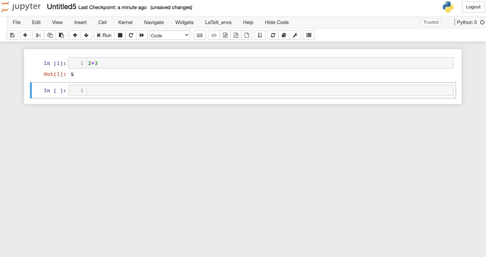

Chapter 1 Introduction
Contents
Chapter 1 Introduction#
Review of Calculus#
There are several concepts and facts from Calculus that we need in Numerical Analysis. In this section we will list some definitions and theorems that will be needed later. For the most part functions in this book refer to real valued functions defined on real numbers \(\mathbf{R}\), or an interval \((a,b)\subset\mathbf{R}\).
Definition 1
A function \(f\) has the limit \(L\) at \(x_{0}\), written as \(\lim_{x\rightarrow x_{0}}f(x)=L,\) if for any \(\epsilon>0,\) there exists \(\delta>0\) such that \(|f(x)-L|<\epsilon\) whenever \(0<|x-x_{0}|<\delta\).
A function \(f\) is continuous at \(x_{0}\) if \(\lim_{x\rightarrow x_{0}}f(x)=f(x_{0}),\) and \(f\) is continuous on a set \(A\) if it is continuous at each \(x_{0}\in A\).
Let \(\{x_{n}\}_{n=1}^{\infty}\) be an infinite sequence of real numbers. The sequence has the limit \(x,\) i.e., \(\lim_{n\rightarrow\infty}x_{n}=x\) (or, written as \(x_{n}\rightarrow x\) as \(n\rightarrow\infty)\) if for any \(\epsilon>0,\) there exists an integer \(N>0\) such that \(|x_{n}-x|<\epsilon\) whenever \(n>N\).
Theorem 1
The following are equivalent for a real valued function \(f:\)
\(f\) is continuous at \(x_{0}\)
If \(\{x_{n}\}_{n=1}^{\infty}\) is any sequence converging to \(x_{0},\) then \(\lim_{n\rightarrow\infty}f(x_{n})=f(x_{0})\).
Definition 2
We say \(f(x)\) is differentiable at \(x_{0}\) if
exists.
Notation:
\(C^{n}(A)\) denotes the set of all functions \(f\) such that \(f\) and its first \(n\) derivatives are continuous on \(A.\) If \(f\) is only continuous on \(A\), then we write \(f\in C^{0}(A).\) \(C^{\infty}(A)\) consists of functions that have derivatives of all orders, for example, \(f(x)=\sin x\) or \(f(x)=e^{x}\).
The following well-known theorems of Calculus will often be used in the remainder of the book.
Theorem 2 (Mean value theorem)
If \(f\in C^{0}[a,b]\) and \(f\) is differentiable on \((a,b)\), then there exists \(c\in(a,b)\) such that \(f'(c)=\frac{f(b)-f(a)}{b-a}\).
Theorem 3 (Extreme value theorem)
If \(f\in C^{0}[a,b]\) and \(f\) is differentiable on \((a,b)\), then there exists \(c\in(a,b)\) such that \(f'(c)=\frac{f(b)-f(a)}{b-a}\).
Theorem 4 (Intermediate value theorem)
If \(f\in C^{0}[a,b]\) and \(K\) is any number between \(f(a)\) and \(f(b)\), then there exists \(c\in(a,b)\) with \(f(c)=K\).
Theorem 5 (Taylor’s theorem)
Suppose \(f\in C^{n}[a,b]\) and \(f^{(n+1)}\) exists on \((a,b),\) and \(x_{0}\in(a,b).\) Then, for \(x\in (a,b)\)
where \(P_{n}\) is the \(n\)th order Taylor polynomial
and \(R_{n}\) is the remainder term
for some \(\xi\) between \(x\) and \(x_{0}\).
Example 1
Let \(f(x)=x\cos x -x.\)
Find \(P_{3}(x)\) about \(x_{0}=\pi/2\) and use it to approximate \(f(0.8).\)
Compute the exact value for \(f(0.8)\), and the error \(|f(0.8)-P_{3}(0.8)|.\)
Use the remainder term \(R_{3}(x)\) to find an upper bound for the error \(|f(0.8)-P_{3}(0.8)|.\) Compare the upper bound with the actual error found in part 2.
Solution.
First note that \(f(\pi/2)=-\pi/2\). Differentiating \(f\) we get:
\[\begin{align*} f'(x) & =\cos x - x \sin x -1 \Rightarrow f'(\pi/2)=-\pi/2-1\\ f''(x) & =-2\sin x -x \cos x \Rightarrow f''(\pi/2)=-2\\ f'''(x) & =-3 \cos x+x \sin x\Rightarrow f'''(\pi/2)=\pi/2. \end{align*}\]Therefore
\[\begin{equation*} P_{3}(x)=-\pi/2-(\pi/2+1)(x-\pi/2)-(x-\pi/2)^2+\frac{\pi}{12} (x-\pi/2)^3. \end{equation*}\]Then we approximate \(f(0.8)\) by \(P_{3}(0.8)=-0.3033\) (using 4-digits with rounding).
The exact value is \(f(0.8)=-0.2426\) and the absolute error is \(|f(0.8)-P_{3}(0.8)|=0.06062\).
To find an upper bound for the error, write
\[\begin{equation*} |f(0.8)-P_{3}(0.8)|=|R_{3}(0.8)| \end{equation*}\]where
\[\begin{equation*} R_{3}(0.8)=f^{(4)}(\xi)\frac{(0.8-\pi/2)^{4}}{4!} \end{equation*}\]and \(\xi\) is between \(0.8\) and \(\pi/2\). We need to differentiate \(f\) one more time: \(f^{(4)}(x)=4\sin x +x \cos x.\) Since \(0.8<\xi<\pi/2\), we can find an upper bound for \(f^{(4)}(x),\) and thus an upper bound for \(R_{3}(0.8),\) using triangle inequality:
\[\begin{align*} \left|R_{3}(0.8)\right| & =\left|f^{(4)}(\xi)\frac{(0.8-\pi/2)^{4}}{4!}\right|=\left|4 \sin\xi + \xi \cos \xi\right|(0.01471)\\ & \leq 0.05883 | \sin \xi | + 0.01471 |\xi| |\cos \xi|. \end{align*}\]Note that on \(0.8<\xi<\pi/2\), \(\sin\xi\) is a positive increasing function, and \(|\sin(\xi)|<\sin(\pi/2)=1\). For the second term, we can find an upper bound by observing \(|\xi|\) attains a maximum value of \(\pi/2\) on \(0.8<\xi<\pi/2\), and \(\cos\xi\), which is a decreasing positive function on \(0.8<\xi<\pi/2\), has a maximum value of \(\cos{(0.8)}=0.6967\). Putting these together, we get
\[\begin{equation*} \left|R_{3}(0.8)\right| < 0.05883 (1) + (0.01471) (\pi/2) (0.6967) \approx 0.07493. \end{equation*}\]Therefore, our estimate for the actual error (which is 0.06062 from part 2) is 0.07493.
Excercise 1.1
Find the second order Taylor polynomial for \(f(x)=e^{x}\sin x\) about \(x_{0}=0\).
a. Compute \(P_{2}(0.4)\) to approximate \(f(0.4)\). Use the remainder term \(R_{2}(0.4)\) to find an upper bound for the error \(|P_{2}(0.4)-f(0.4)|\). Compare the upper bound with the actual error.
b. Compute \(\int_{0}^{1}P_{2}(x)dx\) to approximate \(\int_{0}^{1}f(x)dx\). Find an upper bound for the error using \(\int_{0}^{1}R_{2}(x)dx\), and compare it to the actual error.
Python basics#
We recommend using the free and open-source Python package manager Anaconda (Individual Edition \url{https://www.anaconda.com/products/individual}). Go to the webpage and choose the installer according to your operating system. At the time of writing this book, Python Version 3.8 is installed by default, which is also the version we use in this book. There are different environments and editors to run Python. Here we will use the Jupyter environment, which will be ready after Anaconda is installed. There are several tutorials and other resources on Python at \url{https://www.python.org/} where one can find up-to-date information on Python.
The Jupyter environment uses the so-called Jupyter notebook where one can write and edit a Python code, run the code, and export the work into various file formats including Latex and pdf. Most of our interaction with Python will be through the Jupyter notebooks. Note that Anaconda, once installed, has already preinstalled a large number of commonly used Python packages, so it is not necessary to install new packages for the purpose of running the codes in this book.
After installing Anaconda, open a Jupyter notebook by following Anaconda \(\rightarrow\) Jupyter Notebook \(\rightarrow\) new \(\rightarrow\) Python 3. Here is a screenshot of my notebook:

Let’s start with some basic computations.
2+3
5
Now we import the sin and log function, as well as the \(\pi\) constant from the math package,
from math import sin, pi, log
and compute \(\sin{(\pi/4)}\):
sin(pi/4)
0.7071067811865476
One way to learn about a function is to search for it online in the Python documentation https://docs.python.org/3/. For example, the syntax for the logarithm function in the math package is \(\log (x[,b])\) where \(b\) is the optional base. If \(b\) is not provided, the natural logarithm of \(x\) (to base \(e\)) is computed.
log(4,2)
2.0
Numpy arrays#
NumPy is a useful Python package for array data structure, random number generation, linear algebra algorithms, and so on. A NumPy array is a data structure that can be used to represent vectors and matrices, for which the computations are also made easier. Import the NumPy package and define an alias (np) for it.
import numpy as np
Here is the basic syntax to create a \(1\)D NumPy array (representing a vector):
x = np.array([10, 20, 30])
x
array([10, 20, 30])
The following line of code shows the entries of the created array are integers of 32 bits.
x.dtype
dtype('int32')
If we input a real, Python will change the type accordingly:
x = np.array([10, 20, 30, 0.1])
x
array([10. , 20. , 30. , 0.1])
x.dtype
dtype('float64')
A 1D NumPy array does not assume a particular row or column arrangement of the data, and hence taking transpose for a 1D NumPy array is not valid. Here is another way to construct a 1D array, and some array operations:
x = np.array([10*i for i in range(1, 6)])
x
array([10, 20, 30, 40, 50])
x[-1]
50
min(x)
10
np.sum(x)
150
x = np.append(x, 99)
x
array([10, 20, 30, 40, 50, 99])
x[3]
40
x.size
6
The NumPy package has a wide range of mathematical functions such as \(\sin\), \(\log\), etc., which can be applied elementwise to an array:
x = np.array([1,2,3])
x
array([1, 2, 3])
np.sin(x)
array([0.84147098, 0.90929743, 0.14112001])
Plotting#
There are several packages for plotting functions and we will use the PyPlot package. The package is preinstalled in Anaconda. To start the package, use
import matplotlib.pyplot as plt
%matplotlib inline
The following piece of code is a simple example of plotting with PyPlot.
x = np.linspace(0, 2*np.pi, 1000)
y = np.sin(3*x)
plt.plot(x, y, color='red', linewidth=2.0, linestyle='--')
plt.title('The sine function');
Let’s plot two functions, \(\sin3x\) and \(\cos x\), and label them appropriately.
x = np.linspace(0, 2*np.pi, 1000)
y = np.sin(3*x)
z = np.cos(x)
plt.plot(x, y, color='red', linewidth=2.0, linestyle='--', label='sin(3x)')
plt.plot(x, z, color='blue', linewidth=1.0, linestyle='-', label='cos(x)')
plt.legend(loc='upper center');

Matrix operations#
NumPy uses \(2\)D arrays to represent matrices. Let’s create a \(3\times3\) matrix (\(2\)D array):
A = np.array([[-1, 0.26, 0.74], [0.09, -1, 0.26], [1,1,1]])
A
array([[-1. , 0.26, 0.74],
[ 0.09, -1. , 0.26],
[ 1. , 1. , 1. ]])
Transpose of (A) is computed as:
A.T
array([[-1. , 0.09, 1. ],
[ 0.26, -1. , 1. ],
[ 0.74, 0.26, 1. ]])
Here is its inverse.
np.linalg.inv(A)
array([[-0.59693007, 0.22740193, 0.38260375],
[ 0.08053818, -0.82433201, 0.15472807],
[ 0.51639189, 0.59693007, 0.46266818]])
To compute the product of \(A\) and the inverse of \(A\), use:
np.dot(A, np.linalg.inv(A))
array([[ 1.00000000e+00, 1.24617643e-17, -1.74319952e-17],
[-3.98224397e-17, 1.00000000e+00, 1.74319952e-17],
[ 0.00000000e+00, 0.00000000e+00, 1.00000000e+00]])
Let’s try matrix vector multiplication. Define some vector (v) as:
v = np.array([0,0,1])
v
array([0, 0, 1])
Now try \(\text{np.dot}(A,v)\) to multiply them.
np.dot(A, v)
array([0.74, 0.26, 1. ])
To solve the matrix equation (Ax=v), type:
np.linalg.solve(A, v)
array([0.38260375, 0.15472807, 0.46266818])
The solution to \(Ax=v\) can be also computed as \(x=A^{-1}v\) as follows:
np.dot(np.linalg.inv(A), v)
array([0.38260375, 0.15472807, 0.46266818])
Powers of (A) can be computed as:
np.linalg.matrix_power(A, 5)
array([[-2.80229724, 0.39583437, 2.76651959],
[ 0.12572728, -1.39301724, 0.84621677],
[ 3.74250756, 3.24338756, 4.51654028]])
Logic operations#
Here are some basic logic operations:
2 == 3
False
2 <= 3
True
(2==2) or (1<0)
True
(2==2) and (1<0)
False
(4 % 2) == 0 # Check if 4 is an even number
True
(5 % 2) == 0
False
(5 % 2) == 1 # Check if 5 is an odd number
True
Defining functions#
There are two ways to define a function. Here is the basic syntax:
def squareit(x):
return x**2
squareit(3)
9
There is also a compact form to define a function, if the body of the function is a short, simple expression:
cubeit = lambda x: x**3
cubeit(5)
125
Suppose we want to pick the elements of an array that are greater than 0. This can be done using:
x = np.array([-2,3,4,5,-3,0])
x[x>0]
array([3, 4, 5])
To count the number of elements that are greater than \(0\) in the array above, use
x[x>0].size
3
Types#
In Python, there are several types for integers and floating-point numbers such as int8, int64, float32, float64, and more advanced types for Boolean variables and strings. When we write a function, we do not have to declare the type of its variables: Python figures what the correct type is when the code is compiled. This is called a dynamic type system. For example, consider the squareit function we defined before:
def squareit(x):
return x**2
The type of \(x\) is not declared in the function definition. We can call it with real or integer inputs, and Python will know what to do:
squareit(5)
25
squareit(5.5)
30.25
Now suppose the type of the input is a floating-point number. We can write another version of squareit that specifies the type.
def typesquareit(x: float):
return x**2
The input \(x\) is now statically typed. However, the purpose here is to add an annotation to remind the users of the input type that should be used. In fact, Python interpreter will not perform any type checking automatically, unless some additional packages are used. In other words, there will be no difference between the squareit and typesquareit functions.
typesquareit(5.5)
30.25
typesquareit(5)
25
It can be seen that the function typesquareit has no problem taking the integer \(5\) as an input.
Control flow#
Let’s create a NumPy array of 10 entries of floating-type. A simple way to do it is by using the function np.zeros(n), which creates an array of size \(n\), and sets each entry to zero. (A similar function is np.ones(n) which creates an array of size \(n\) with each entry set to 1.)
values = np.zeros(10)
values
array([0., 0., 0., 0., 0., 0., 0., 0., 0., 0.])
Now we will set the elements of the array to values of sin function.
for n in range(10):
values[n] = np.sin((n+1)**2)
values
array([ 0.84147098, -0.7568025 , 0.41211849, -0.28790332, -0.13235175,
-0.99177885, -0.95375265, 0.92002604, -0.62988799, -0.50636564])
Here is another way to do this. Start with creating an empty array:
newvalues = np.array([])
Then use a while statement to generate the values, and append them to the array.
n = 1
while n<=10:
newvalues = np.append(values, np.sin(n**2))
n += 1
newvalues
array([ 0.84147098, -0.7568025 , 0.41211849, -0.28790332, -0.13235175,
-0.99177885, -0.95375265, 0.92002604, -0.62988799, -0.50636564,
-0.50636564])
Here is how the if statement works:
def f(x, y):
if x < y:
print(x, ' is less than ', y)
elif x > y:
print(x, ' is greater than ', y)
else:
print(x, ' is equal to ', y)
f(2, 3)
2 is less than 3
f(3, 2)
3 is greater than 2
f(1, 1)
1 is equal to 1
In the next example we use if and while to find all the odd numbers in \(\{1,\ldots,10\}\). The empty array created in the first line is of int64 type.
odds = np.array([]).astype('int64')
n = 1
while n <= 10:
if n%2 == 1:
odds = np.append(odds, n)
n += 1
odds
array([1, 3, 5, 7, 9], dtype=int64)
Here is an interesting property of the function break:
n = 1
while n <= 20:
if n%2 == 0:
print(n)
break
n += 1
2
Why did the above execution stop at 2? Let’s try removing break:
n = 1
while n <= 20:
if n%2 == 0:
print(n)
n += 1
2
4
6
8
10
12
14
16
18
20
The function break causes the code to exit the while loop once it is evaluated.
Random numbers#
These are \(5\) uniform random numbers from \((0,1)\).
import numpy as np
np.random.rand(5)
array([0.33081691, 0.12251738, 0.91362421, 0.79858113, 0.91851726])
And these are random numbers from the standard normal distribution:
np.random.randn(5)
array([-0.62600398, 0.8296973 , -1.85195159, -1.44458098, -0.47069968])
Here is a frequency histogram of \(10^5\) random numbers from the standard normal distribution using \(50\) bins:
y = np.random.randn(10**5)
plt.hist(y, 50);

Sometimes we are interested in relative frequency histograms where the height of each bin is the relative frequency of the numbers in the bin. Adding the option “density=true” outputs a relative frequency histogram:
y = np.random.randn(10**5)
plt.hist(y, 50, density=True);
Excercise 1.2
In Python you can compute the factorial of a positive integer \(n\) by the built-in function factorial(n)} from the subpackage special in SciPy (scipy.special.factorial(n)). Write your own version of this function, called \(factorial2\), using a for loop. Use the time.time() function to compare the execution time of your version and the built-in version of the factorial function.
Excercise 1.3 Write a Python code to estimate the value of \(\pi\) using the following procedure: Place a circle of diameter one in the unit square. Generate 10,000 pairs of random numbers \((u,v)\) from the unit square. Count the number of pairs \((u,v)\) that fall into the circle, and call this number \(n\). Then \(n/10000\) is approximately the area of the circle. (This approach is known as the Monte Carlo method.)
Excercise 1.4 Consider the following function
a. Compute \(f(2,3)\) by hand.
b. Write a Python code that computes \(f\). Verify \(f(2,3)\) matches your answer above.
Computer arithmetic#
The way computers store numbers and perform computations could surprise the beginner. In Python if you type \((\sqrt{3})^{2}\) the result will be 2.9….96, where 9 is repeated 15 times. Here are two obvious but fundamental differences in the way computers do arithmetic:
only finitely many numbers can be represented in a computer;
a number represented in a computer can only have finitely many digits.
Therefore the numbers that can be represented in a computer exactly is only a subset of rational numbers. Anytime the computer performs an operation whose outcome is not a number that can be represented exactly in the computer, an approximation will replace the exact number. This is called the roundoff error: error produced when a computer is used to perform real number calculations.
Floating-point representation of real numbers#
Here is a general model for representing real numbers in a computer:
where
In the floating-point representation (1), if we specify \(e\) in such a way that \(a_{1}\neq 0,\) then the representation will be unique. This is called the normalized floating-point representation. For example if \(\beta=10,\) in the normalized floating-point we would write \(0.012\) as \(0.12\times10^{-1}\), instead of choices like \(0.012 \times 10^{0}\) or \(0.0012 \times 10\).
In most computers today, the base is \(\beta=2.\) Bases 8 and 16 were used in old IBM mainframes in the past. Some handheld calculators use base 10. An interesting historical example is a short-lived computer named Setun developed at Moscow State University which used base 3.
There are several choices to make in the general floating-point model (1) for the values of \(s,\beta, t,e\). The IEEE 64-bit floating-point representation is the specific model used in most computers today:
Some comments:
Notice how \(s\) appears in different forms in equations (1) and (2). In (2), \(s\) is either 0 or 1. If \(s=0\), then \(x\) is positive. If \(s=1\), \(x\) is negative.
Since \(\beta=2,\) in the normalized floating-point representation of \(x\) the first (nonzero) digit after the decimal point has to be 1. Then we do not have to store this number. That’s why we write \(x\) as a decimal number starting at 1 in (2). Even though precision is \(t=52,\) we are able to access up to the 53rd digit \(a_{53}\).
The bounds for the exponent are: \(0\leq e\leq 2047.\) We will discuss where 2047 comes from shortly. But first, let’s discuss why we have \(e-1023\) as the exponent in the representation (2), as opposed to simply \(e\) (which we had in the representation (1). If the smallest exponent possible was \(e=0\), then the smallest positive number the computer can generate would be \((1.00...0)_{2}=1\): certainly we need the computer to represent numbers less than 1! That’s why we use the shifted expression \(e-1023\), called the \textbf{biased exponent}, in the representation In (2). Note that the bounds for the biased exponent are \(-1023\leq e-1023 \leq 1024.\)
Here is a schema that illustrates how the physical bits of a computer correspond to the representation above. Each cell in the table below, numbered 1 through 64, correspond to the physical bits in the computer memory.
The first bit is the sign bit: it stores the value for \(s\), 0 or 1.
The blue bits 2 through 12 store the exponent \(e\) (not \(e-1023)\). Using 11 bits, one can generate the integers from 0 to \(2^{11}-1=2047\). Here is how you get the smallest and largest values for \(e\):
The red bits, and there are 52 of them, store the digits \(a_{2}\)
Example 2
Find the floating-point representation of 10.375.
Solution.
You can check that \(10=({\color{cyan}{\color{red}1}}{\color{brown}{\color{green}{\color{green}0}}}{\color{blue}1}{\color{black}0})_{2}\) and \(0.375=(.0{\color{blue}1}{\color{green}1})_{2}\) by computing
Then
where \((1.010011)_{2}\times2^{3}\) is the normalized floating-point representation of the number. Now we rewrite this in terms of the representation (2):
Since \(1026=(10000000010)_{2}\), the bit by bit representation is:
Notice the first sign bit is 0 since the number is positive. The next 11 bits (in blue) represent the exponent \(e=1026\), and the next group of red bits are the mantissa, filled with 0’s after the last digit of the mantissa. In Python, although there is no built-in function that produces the bit by bit representation of a number, we can define the following function named float2bin, which provides the bit representation of a floating-point number, based on the struct package:
import struct
def float2bin(f):
(d,) = struct.unpack(">Q", struct.pack(">d", f))
return f'{d:064b}'
float2bin(10.375)
'0100000000100100110000000000000000000000000000000000000000000000'
Special cases: zero, infinity, NAN#
In the floating-point arithmetic there are two zeros: \(+0.0\) and \(-0.0\), and they have special representations. In the representation of zero, all exponent and mantissa bits are set to 0. The sign bit is 0 for \(+0.0\), and 1, for \(-0.0\):
When the exponent bits are set to zero, we have \(e=0\) and thus \(e-1023=-1023.\) This arrangement, all exponent bits set to zero, is reserved for \(\pm 0.0\) and subnormal numbers. Subnormal numbers are an exception to our normalized floating-point representation, an exception that is useful in various ways. For details see [Goldberg, 1991].
Here is how plus and minus infinity is represented in the computer:
When the exponent bits are set to one, we have \(e=2047\) and thus \(e-1023=1024.\) This arrangement is reserved for \(\pm \infty\) as well as other special values such as NaN (not-a-number).
In conclusion, even though \(-1023\leq e-1023\leq 1024\) in (2), when it comes to representing non-zero real numbers, we only have access to exponents in the following range: \(-1022\leq e-1023\leq 1023.\)
Therefore, the smallest positive real number that can be represented in a computer is
and the largest is
During a calculation, if a number less than the smallest floating-point number is obtained, then we obtain the underflow error. A number greater than the largest gives overflow error.
Excercise 1.5
Consider the following toy model for a normalized floating-point representation in base 2: \(x=(-1)^{s}(1.a_{2}a_{3})_{2}\times2^{e}\) where \(-1\leq e\leq1\). Find all positive machine numbers (there are 12 of them) that can be represented in this model. Convert the numbers to base 10, and then carefully plot them on the number line, by hand, and comment on how the numbers are spaced.
Representation of integers#
- Gol91
D Goldberg. What every computer scientist should know about floating-point arithmetic. ACM Computing Surveys (CSUR), 23:5–48, 1991.